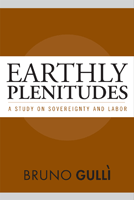

<body bgcolor="#FFFFFF" text="#000000" link="#0000FF" vlink="#CC0000" alink="#CC0000"><center><hr width="350" size="1" align="center" noshade>Can life flourish without sovereignty?<hr width="350" size="1" align="center" noshade><p><a href="https://cdcshoppingcart.uchicago.edu/Cart/ChicagoBook.aspx?ISBN=9781592139798&&PRESS=temple" target="_top">Buy this book!</a> | <a href="https://cdcshoppingcart.uchicago.edu/Cart/Cart.aspx?PRESS=temple" target="_top">View Cart</a> | <a href="https://cdcshoppingcart.uchicago.edu/Cart/Cart.aspx?PRESS=temple" target="_top">Check Out</a></p><p></p></center><!--none//--><h1>Earthly Plenitudes</h1>
<H2>A Study on Sovereignty and Labor</H2>
<h3>Bruno Gull�</h3>
<P>cloth 1-59213-979-5 $74.50, Nov 09, <FONT COLOR=#990033>Available</FONT>
<br>paper 1-59213-980-9 $29.95, Mar 16, <FONT COLOR=#990033>Available</FONT>
<br>Electronic Book 1-59213-981-7 $29.95 <FONT COLOR=#990033>Available</FONT>
<BR> 200 pp
6x9
</P><BLOCKQUOTE><I>"<i>Gull� is arguing for bold and radical theses which illuminate developments in the contemporary world, go beyond existing literature in the field in a dramatic way (by critiquing the very idea of sovereignty) and draw out the political implications of so-called postmodern theory. In my opinion, this is a seminal work.</i>"<br><b>&#151Anatole Anton</b>, San Francisco State University</I></BLOCKQUOTE>
<p>A fierce critique of productivity and sovereignty in the world of labor and everyday life, Bruno Gull�s <i>Earthly Plenitudes</i> asks: can labor exist without sovereignty and without capitalism? He introduces the concept of dignity of individuation to prompt a rethinking of categories of political ontology. Dignity of individuation stresses the notion that the dignity of each and any individual being lies in its being individuated as such; dignity is the irreducible and most essential character of any being. Singularity is a more universal quality.
</p><p>
Gull� first reviews approaches to sovereignty by philosophers as varied as Gottfried Leibniz and Georges Bataille, and then looks at concrete examples where the alliance of sovereignty and capital cracks under the potency of living labor. He examines contingent academic labor as an example of the super-exploitation of labor, which has become a global phenomenon, and as such, a clear threat to the sovereign logic of capital. Gull� also looks at disability to assert that a new measure of humanity can only be found outside the schemes of sovereignty, productivity, efficiency, and independence, through care and caring for others, in solidarity and interdependence. </p>
<BR>&nbsp;<h2>Excerpt</h2><P>Excerpt available at <a href="http://www.temple.edu/tempress">www.temple.edu/tempress</a></p>
<BR>&nbsp;<h2>Reviews</h2>
<P><i>"Gull� blends elements from the history of philosophy with debates in contemporary continental political theory, with particular attention to the term �sovereignty,� its meaning, and shifts in its deployment. He thereby offers a compelling synthesis of texts, concepts, and ideas."</I> <BR><B>&#151Amy E. Wendling</B>, Creighton University
<P><i>"</i>Earthly Plenitudes<i> is a timely contribution to the field. The topic is important and the resources Gull� has marshaled are impressive. What is particularly exciting is the combination of theoretical work and appeal to the history of philosophy, as well as the engagement with contemporary issues and events. This book will be of interest to students and scholars of social and political philosophy."</I> <BR><B>&#151Anne O�Byrne</B>, Stony Brook University
<p><i>"</i>Earthly Plenitudes<i> is a deft study of sovereignty in its relationship to labor. It is a remarkably expansive work, weaving critiques of liberal philosophy with Nigerian literature, Calabrian idioms, St. Francis of Assisi, the Marx of the Grundrisse, the Belgian film </i>La Promesse<i>, Michael Moore�s </i>Sicko<i>, Jean Luc Nancy, and many other theorists, into an elegant text....[It is] especially rewarding for those who follow the text in its entirety and take seriously the author�s underlying ontology of labor."</i><br>&#151<b><i>Socialism and Democracy</i></b>
<p><i>�Gull� develops a theory of value by dwelling at the intersection of personhood, labor, and social life. Moving beyond traditional Marxist critique, he favors an anarcho-communism that constructs the basis for organizing people�s labor in a way that protects the dignity of unique individual laborers and satisfies collective needs. The goal is both ethical and political... Gull�s exegesis...is insightful and scholarly.�</i><br>&#151<b><i>Capitalism Nature Socialism</i></b>
<BR>&nbsp;<P><p>&nbsp;&nbsp;<font color="#3152A5">Also available in e-book</font></p></P><BR>&nbsp;<br>
<h2>Contents</h2><P>
<p>Acknowledgments
<br>Introduction
<p><b>PART I: Critique of Sovereignty</b>
<br>1. Singularity or the Dignity of Individuation
<br>2. Exception and Critique
<br>3. Bataille�s Special Use of the Concept of Sovereignty
<p><b>PART II: Sovereignty and Labor</b>
<br>4. Ax and Fire: Knowledge Production and the Superexploitation of Contingent Academic Labor
<br>5. Sovereign, Productive, and Effi cient: Th e Place of Disability in the Ableist Society
<p>Conclusion: Labor without Sovereignty
<br>Notes
<br>References
<br>Index
</P><BR>&nbsp;<H2>About the Author(s)</H2>
<table><tr><td valign="top"><img src="/tempress/authors/2017_au1.gif" height="90" width="75"></td><td width="100%" valign="middle"><p><b>Bruno Gull�</b> teaches philosophy at Long Island University, Brooklyn Campus, and at Kingsborough Community College. He is the author of <i><a href="1766_reg.html" target="_top">Labor of Fire: The Ontology of Labor between Economy and Culture</i></a> (Temple).</P></td></tr></table>
<BR><H2>Subject Categories</H2>
<p><A HREF="/tempress/labor.html" TARGET="_top">Labor Studies and Work</a>
<BR><A HREF="/tempress/sociology.html" TARGET="_top">Sociology</a>
<BR><A HREF="/tempress/philosophy.html" TARGET="_top">Philosophy and Ethics</a>
</p>
<p align="center"><a href="https://cdcshoppingcart.uchicago.edu/Cart/ChicagoBook.aspx?ISBN=9781592139798&&PRESS=temple" target="_top">Buy this book!</a> | <a href="https://cdcshoppingcart.uchicago.edu/Cart/Cart.aspx?PRESS=temple" target="_top">View Cart</a> | <a href="https://cdcshoppingcart.uchicago.edu/Cart/Cart.aspx?PRESS=temple" target="_top">Check Out</a></p><p><font face="Arial" size="1"><a href="copyright.html" onMouseOver="window.status='Web Copyright Policy';return true;" onMouseOut="window.status=''" title="Web Copyright Policy">&copy;</a> 2016 <a href="http://www.temple.edu" target="new" onMouseOver="window.status='Link to Temple University home page';return true;" onMouseOut="window.status=''" title="Link to Temple University home page">Temple University</a>. All Rights Reserved. http://www.temple.edu/tempress/titles/2017_reg.html</font></p>